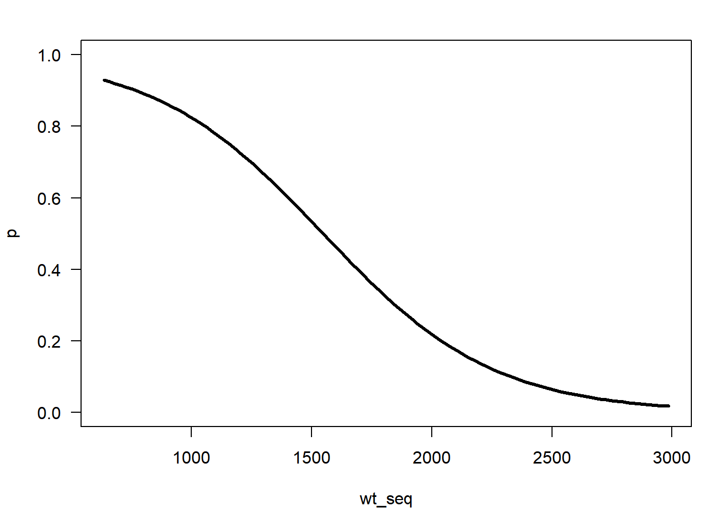

Chapter 3 Basic Statistics
Chapter Overview
In this chapter, you will get familiar with the basics of using R for the purpose it was designed: statisitical analysis. You will learn how to:
- fit and interpret the output from various general linear models:
- simple linear regression models
- T-tests (also ANOVA)
- ANCOVA models
- Interactions
- conduct basic model selection
- fit basic GLMs: the logistic regression model
- Bonus topic: fitting non-linear regression models using
nls()
R’s built-in statistical modeling framework is pretty intuitive and comprehensive. R has gained popularity as a statistics software and is commonly used both in academia and governmental resource agencies. This popularity is likely a result of its power, flexibility, intuitive nature, and price (free!). For many students, this chapter may be the one that is most immediately useful.
IMPORTANT NOTE: If you did not attend the sessions corresponding to Chapters 1 or 2, you are recommended to walk through the material found in those chapters before proceeding to this material. Also note that if you are confused about a topic, you can use CTRL + F to find previous cases where that topic has been discussed in this book.
Before You Begin
You should create a new directory and R script for your work in this Chapter. Create a new R script called Ch3.R and save it in the directory C:/Users/YOU/Documents/R-Book/Chapter3. Set your working directory to that location. Revisit the material in Sections 1.2 and 1.3 for more details on these steps.
3.1 The General Linear Model
Much of this chapter will focus on the general linear model, so it is important to become familiar with it. The general linear model is a family of models that allows you to determine the relationship (if any) between some continuous response variable (\(y\)) and some predictor variable(s) (\(x_n\)) and is often written as:
\[\begin{equation} y_i=\beta_0 + \beta_1 x_{i1} + ... + \beta_j x_{ij}+ ... + \beta_n x_{in} + \varepsilon_i, \varepsilon_i \sim N(0,\sigma), \tag{3.1} \end{equation}\]where the subscript \(i\) represents an individual observation. The predictor variable(s) can be either categorical (i.e., grouping variables used in ANOVA, t-test, etc.), continuous (regression), or a combination of categorical and continuous (ANCOVA). The main focus is to estimate the coefficients (\(\beta\)), and in some cases it is to determine if their values are “significantly” different from the value assumed by some null hypothesis.
The model makes several assumptions about the residuals24 to obtain estimates of the coefficients. For reliable inference, the residuals must:
- be independent
- be normally-distributed
- have constant variance across range of the x-axis
In R, the general linear model is fitted using the lm() function. Here’s the basic syntax is lm(y ~ x, data = dat)25; it says: “fit a model with y as the response variable and x as the sole predictor variable, look for the variables x and y in a data frame called dat”.
3.1.1 Simple Linear Regression
Read the data found in sockeye.csv (see in the instructions for help with acquiring the data) into R. This is the same data set you used in Exercise 2 - revisit this section for more details on the meaning of the variables. These are real data and are presented in Kline and Flagg (2014).
dat = read.csv("../Data/sockeye.csv")
head(dat)## year type weight fecund egg_size survival
## 1 1991 hatch NA NA NA NA
## 2 1992 hatch NA NA NA NA
## 3 1993 hatch 1801 2182 12.25 46.58
## 4 1994 hatch 1681 2134 7.92 50.98
## 5 1995 hatch 2630 1576 21.61 68.06
## 6 1996 hatch 2165 2171 8.74 63.43To fit a regression model using lm(), both x and y must be continous (numeric) variables. In the data set dat, two such variables are the weight and fecund. Fit a regression model where you link the average fecundity (number of eggs) of an individual year to the average weight (in grams) in that year. Ignore for now that the fish come from two sources: hatchery and wild origin.
fit1 = lm(fecund ~ weight, data = dat)If you run just the fit1 object, you will see the model you ran along with the coefficient estimates of the intercept (\(\beta_0\)) and the slope (\(\beta_1\)):
fit1##
## Call:
## lm(formula = fecund ~ weight, data = dat)
##
## Coefficients:
## (Intercept) weight
## 1874.6496 0.2104This model looks like this:
\[\begin{equation} y_i=\beta_0 + \beta_1 x_{i1} + \varepsilon_i, \varepsilon_i \sim N(0,\sigma), \tag{3.2} \end{equation}\]where \(x_{i1}\) is weight. The coefficients are interpretted as:
- \(\beta_0\): the y-intercept (mean
fecundat zeroweight) - \(\beta_1\): the slope (change in
fecundfor one unit increase inweight)
For more information about the model fit, you can use the summary() function:
summary(fit1)##
## Call:
## lm(formula = fecund ~ weight, data = dat)
##
## Residuals:
## Min 1Q Median 3Q Max
## -873.67 -389.28 -71.65 482.96 1041.24
##
## Coefficients:
## Estimate Std. Error t value Pr(>|t|)
## (Intercept) 1874.6496 269.4369 6.958 4.33e-08 ***
## weight 0.2104 0.1803 1.167 0.251
## ---
## Signif. codes: 0 '***' 0.001 '**' 0.01 '*' 0.05 '.' 0.1 ' ' 1
##
## Residual standard error: 500.6 on 35 degrees of freedom
## (7 observations deleted due to missingness)
## Multiple R-squared: 0.03745, Adjusted R-squared: 0.009945
## F-statistic: 1.362 on 1 and 35 DF, p-value: 0.2511Again the coefficient estimates are shown, but now you see the uncertainty on the parameter estimates (standard errors), the test statistic, and the p-value testing the null hypothesis that each coefficient has a zero value. Here you can see that the p-value does not support rejection of the null hypothesis that the slope is zero. You can see the residual standard error (variability of data around the fitted line and the estimate of \(\sigma\)), the \(R^2\) value (the proportion of variation in fecund explained by variation in weight), and the p-value of the overall model.
You can easily see the model fit by using the abline() function. Make a new plot and add the fitted regression line:
plot(fecund ~ weight, data = dat, col = "grey", pch = 16, cex = 1.5)
abline(fit1)
It fits, but not very well. It seems there are two groups: one with data points mostly above the line and one with data points mostly below the line. You’ll now run a new model to get at this.
3.1.2 ANOVA: Categorical predictors
ANOVA models attempt to determine if the means of different groups are different. You can fit them in the same basic lm() framework. But first, notice that:
class(dat$type); levels(dat$type)## [1] "factor"## [1] "hatch" "wild"tells you the type variable is a factor. It has levels of "hatch" and "wild" which indicate the origin of the adult spawning fish sampled each year. If you pass lm() a predictor variable with a factor class, R will automatically fit it as an ANOVA model. See Section 1.5 for more details on factors. Factors have an explicit ordering of the levels. By default, this ordering happens alphabetically: if your factor has levels "a", "b", and "c", they will be assigned the order of 1, 2 and 3, respectively. You can always see how R is ordering your factor by doing something similar to this:
pairs = cbind(
as.character(dat$type),
as.numeric(dat$type)
)
head(pairs); tail(pairs)## [,1] [,2]
## [1,] "hatch" "1"
## [2,] "hatch" "1"
## [3,] "hatch" "1"
## [4,] "hatch" "1"
## [5,] "hatch" "1"
## [6,] "hatch" "1"## [,1] [,2]
## [39,] "wild" "2"
## [40,] "wild" "2"
## [41,] "wild" "2"
## [42,] "wild" "2"
## [43,] "wild" "2"
## [44,] "wild" "2"The functions as.character and as.numeric are coersion functions: they attempt to change the way something is interpretted. Notice that the level "hatch" is assigned the order 1 because it comes before "wild" alphebetically. The first level is termed the reference level because it is the group that all other levels are compared to when fitting a model. You can change the reference level using dat$type_rlvl = relevel(dat$type, ref = "wild").
You are now ready to fit the ANOVA model, which will measure the size of the difference in the mean fecund between different levels of the factor type:
fit2 = lm(fecund ~ type, data = dat)Think of this model as being written as:
\[\begin{equation} y_i=\beta_0 + \beta_1 x_{i1} + \varepsilon_i \tag{3.3} \end{equation}\]and assume that \(x_{i1} = 0\) if observation \(i\) is a fish from the "hatch" level and \(x_{i1} = 1\) if observation \(i\) is a fish from the "wild" level. Note that Equations (3.2) and (3.3) are the same, the only thing that differs is the coding of the variable \(x_{i1}\). In the ANOVA case:
- \(\beta_0\) (the intercept) is the mean
fecundfor the"hatch"level and - \(\beta_1\) is the difference in mean
fecund:"wild"-"hatch".
So when you run coef(fit2) to extract the coefficient estimates and get:
## (Intercept) typewild
## 1846.2500 713.3971you see that the mean fecundity of hatchery fish is about 1846 eggs and that the average wild fish has about 713 more eggs than the average hatchery fish across all years. The fact that the p-value associated with the typewild coefficient when you run summary(fit2) is less than 0.05 indicates that there is statistical evidence that the difference in means is not zero.
Verify your interpretation of the coefficients:
m = tapply(dat$fecund, dat$type, mean, na.rm = T)
# b0:
m[1]## hatch
## 1846.25# b1:
m[2] - m[1]## wild
## 713.39713.1.3 ANCOVA: Continuous and categorical predictors
Now that you have seen that hatchery and wild fish tend to separate along the fecundity axis (as evidenced by the ANOVA results above), you would like to include this in your original regression model. You will fit two regression lines within the same model: one for hatchery fish and one for wild fish. This model is called an ANCOVA model and looks like this:
\[\begin{equation} y_i=\beta_0 + \beta_1 x_{i1} + \beta_2 x_{i2} + \varepsilon_i \tag{3.4} \end{equation}\]If \(x_{i1}\) is type coded with 0’s and 1’s as in Section 3.1.2 and \(x_{i2}\) is weight, then the coefficients are interpretted as:
- \(\beta_0\): the y-intercept of the
"hatch"level (the reference level) - \(\beta_1\): the difference in mean
fecundat the same weight:"wild"-"hatch" - \(\beta_2\): the slope of the
fecundvs.weightrelationship (this model assumes the lines have common slopes, i.e., that the lines are parallel)
You can fit this model and extract the coefficents table from the summary:
fit3 = lm(fecund ~ type + weight, data = dat)
summary(fit3)$coef## Estimate Std. Error t value Pr(>|t|)
## (Intercept) 1039.6417645 175.0992184 5.937444 1.038268e-06
## typewild 866.9909998 96.2473387 9.007948 1.578239e-10
## weight 0.5173716 0.1051039 4.922477 2.164460e-05And you can plot the fit. Study this code to make sure you know what each is doing. Use what you know about the meanings of the three coefficients to decipher the two abline() commands. Remember that abline() takes takes two arguments: a is the intercept and b is the slope.
plot(fecund ~ weight, data = dat, col = "grey",
pch = ifelse(dat$type == "hatch", 1, 16), cex = 1.5)
abline(coef(fit3)[c(1,3)], lty = 2)
abline(sum(coef(fit3)[c(1,2)]), coef(fit3)[3])
legend("bottom", legend = c("Hatchery", "Wild"), pch = c(1,16), lty = c(2,1),
col = "grey", pt.cex = 1.5, bty = "n", horiz = T)
3.1.4 Interactions
Above, you have included an additional predictor variable (and parameter) in your model to help explain variation in the fecund variable. However, you have assumed that the effect of weight on fecundity is common between hatchery and wild fish (note the parallel lines in the figure above). You may have reason to believe that the effect of weight depends on the origin of the fish, e.g., wild fish may tend to accumulate more eggs than hatchery fish for the same increase in weight. Cases where the magnitude of the effect depends on the value of another predictor variable are known as “interactions”. You can write the interactive ANCOVA model like this:
If \(x_{i1}\) is type coded with 0’s and 1’s as in Section 3.1.2 and \(x_{i2}\) is weight, then the coefficients are interpretted as:
- \(\beta_0\): the y-intercept of the
"hatch"level (the reference level) - \(\beta_1\): the difference in y-intercept between the
"wild"level and the"hatch"level. - \(\beta_2\): the slope of the
"hatch"level - \(\beta_3\): the difference in slope between the
"wild"level and the"hatch"level.
You can fit this model:
fit4 = lm(fecund ~ type + weight + type:weight, data = dat)
# or
# fit4 = lm(fecund ~ type * weight, data = dat)The first option above is more clear in its statement, but both do the same thing.
Plot the fit. Study these lines to make sure you know what each is doing. Use what you know about the meanings of the four coefficients to decipher the two abline() commands.
plot(fecund ~ weight, data = dat, col = "grey",
pch = ifelse(dat$type == "hatch", 1, 16), cex = 1.5)
abline(coef(fit4)[c(1,3)], lty = 2)
abline(sum(coef(fit4)[c(1,2)]), sum(coef(fit4)[c(3,4)]))
legend("bottom", legend = c("Hatchery", "Wild"), pch = c(1,16), lty = c(2,1),
col = "grey", pt.cex = 1.5, bty = "n", horiz = T)
Based on the coefficients table:
summary(fit4)$coef## Estimate Std. Error t value Pr(>|t|)
## (Intercept) 1175.7190847 174.545223 6.7358995 1.125255e-07
## typewild -42.8721082 398.980751 -0.1074541 9.150794e-01
## weight 0.4300894 0.105592 4.0731253 2.732580e-04
## typewild:weight 0.7003389 0.299104 2.3414560 2.539681e-02It seems that fish of the different origins have approximately the same intercept, but that their slopes are quite different.
3.1.5 AIC Model Selection
You have now fitted four different models, each that makes different claims about how you can predict the fecundity of a given sockeye salmon at Redfish Lake. If you are interested in determining which of these models you should use for prediction, you need to use model selection. Model selection attempts to find the model that is likely to have the smallest out-of-sample prediction error (i.e., future predictions will be close to what actually happens). One model selection metric is the AIC26. Lower AIC values mean the model should have better predictive performance. Obtain a simple AIC table from your fitted model objects and sort the table by increasing values of AIC:
tab = AIC(fit1, fit2, fit3, fit4)
tab[order(tab$AIC),]## df AIC
## fit4 5 522.0968
## fit3 4 525.7834
## fit2 3 543.6914
## fit1 3 568.9166In general, AIC values that are different by more than 2 units are interpretted as having importantly different predictive performance. Based on this very quick-and-dirty analysis, it seems that in predicting future fecundity, you would want to use the interactive ANCOVA model.
3.2 The Generalized Linear Model
The models you fitted above were called “general linear models”. They all made the assumption that the residuals (\(\varepsilon_i\)) are normally-distributed and that the response variable and the predictor variables are linearly related. Oftentimes data and analyses do not follow this assumption. For these cases you should often move to the broader family of statistical models known as generalized linear models27.
3.2.1 Logistic Regression
One example is in the case of binary data. Binary data have two outcomes, e.g., success/failure, lived/died, male/female, spawned/gravid, happy/sad, etc. If you wish to predict how the probability of one outcome over the other changes depending on some other variable, then you need to use the logistic regression model, which is written as:
\[\begin{equation} logit(p_i)=\beta_0 + \beta_1 x_{i1} + ... + \beta_j x_{ij}+ ... + \beta_n x_{in}, y_i \sim Bernoulli(p_i) \tag{3.6} \end{equation}\]Where \(p_i\) is the probability of success for trial \(i\) (\(y_i = 1\)) at the values of the predictor variables \(x_{ij}\). The \(logit(p_i)\) is the link function that links the linear parameter scale to the data scale. It constrains the value of \(p_i\) to be between 0 and 1 regardless of the values of the \(\beta\) coefficients. The logit link function does this:
\[\begin{equation} logit(p_i) = log\left(\frac{p_i}{1-p_i}\right) \tag{3.7} \end{equation}\]which is the natural logarithm of the odds, a measure of how likely the event is to happen relative to it not happening. Make an R function to calculate the logit transformation:
logit = function(p) {
log(p/(1 - p))
}If you have the result of logit(p[i]) (which is given by the \(\beta\) coefficients and the \(x_{ij}\) data in Equation (3.6)) and need to get p[i], you can apply the inverse logit function:
where \(lp_i = logit(p_i)\). Make a function for the inverse logit transformation:
expit = function(lp) { # lp stands for logit(p)
exp(lp)/(1 + exp(lp))
}Because of the logit link function, the coefficients have different interpretations than in the general linear models you fitted in the previous section: they are expressed in terms of log odds.
Fit a logistic regression model to the sockeye salmon data. None of the variables of interest are binary, but you can create one. Look at the variable dat$survival. This is the average % survival of all eggs laid that make it to the “eye-egg” stage. Create a new variable binary which takes on a 0 if dat$survival is less than 70% and a 1 otherwise:
dat$binary = ifelse(dat$survival < 70, 0, 1)This will be your response variable and your model will estimate how the probability of binary being a 1 changes (or doesn’t) depending on the value of other variables.
Analogous to the simple linear regression model (Section 3.1.1), estimate how \(p\) changes with weight:
fit1 = glm(binary ~ weight, data = dat, family = binomial)
summary(fit1)$coef## Estimate Std. Error z value Pr(>|z|)
## (Intercept) 4.363441330 1.76943946 2.466002 0.01366306
## weight -0.002819271 0.00125243 -2.251040 0.02438303The coefficients are interpretted as (remember, “success” is defined as having at least 70% egg survival to the stage of interest):
- \(\beta_0\): the log odds of success for a fish with zero weight (which is not all that important, let alone difficult to interpret). It can be transformed into more interpretable quantities:
- \(e^{\beta_0}\) is the odds of success for fish with zero weight and
- \(expit(e^{\beta_0})\) is the probability of success for fish with zero weight.
- \(\beta_1\): the additive effect of fish weight on the log odds of success. More interpretable expressions are:
- \(e^{\beta_1}\) is the ratio of the odds of success at two consective weights (e.g., 1500 and 1501) and Claims about \(e^{\beta_1}\) are made as “for every one gram increase in weight, success became * \(e^{\beta_1}\) times as likely to happen”.
- You can predict the probability of success at any weight using \(expit(\beta_0 + \beta_1 weight)\)
You can plot the fitted model:
# create a sequence of weights to predict at
wt_seq = seq(min(dat$weight, na.rm = T),
max(dat$weight, na.rm = t),
length = 100)
# extract the coefficients and get p
p = expit(coef(fit1)[1] + coef(fit1)[2] * wt_seq)
# plot the relationship
plot(p ~ wt_seq, type = "l", lwd = 3, ylim = c(0,1), las = 1)
Fit another model comparing the probability of success between hatchery and wild fish (analogous to the ANOVA model in Section 3.1.2):
fit2 = glm(binary ~ type, data = dat, family = binomial)
summary(fit2)$coef## Estimate Std. Error z value Pr(>|z|)
## (Intercept) -0.2006707 0.4494666 -0.4464641 0.6552620
## typewild 1.3793257 0.7272845 1.8965421 0.0578884An easier way to obtain the predicted probability is by using the predict function:
predict(fit2,
newdata = data.frame(type = c("hatch", "wild")),
type = "response")## 1 2
## 0.4500000 0.7647059This plugs in the two possible values of the predictor variable and asks for the fitted probabilities.
Incorporate the origin type into your original model:
fit3 = glm(binary ~ type + weight, data = dat)and obtain/plot the fitted probabilities for each group:
p_hatch = predict(
fit3, newdata = data.frame(type = "hatch", weight = wt_seq),
type = "response"
)
p_wild = predict(
fit3, newdata = data.frame(type = "wild", weight = wt_seq),
type = "response"
)
plot(p_wild ~ wt_seq, type = "l", lwd = 3, lty = 1,
ylim = c(0,1), las =1,
xlab = "Weight (g)", ylab = "Pr(>70% Egg Survival)"
)
lines(p_hatch ~ wt_seq, lwd = 3, lty = 2)
legend("topright", legend = c("Hatchery", "Wild"),
lty = c(2,1), lwd = 3, bty = "n")
Look for an interaction (all the code is the same except use glm(binary ~ type * weight) instead of glm(binary ~ type + weight) and change everything to fit4 instead of fit3).

3.2.2 AIC Model Selection
You may have noticed that you just did the same analysis with binary as the response instead of fecund. Perform an AIC analysis to determine which model is likely to be best for prediction:
tab = AIC(fit1, fit2, fit3, fit4)
tab[order(tab$AIC),]## df AIC
## fit1 2 45.40720
## fit4 3 46.00622
## fit2 2 50.07577
## fit3 4 50.42090Oddly enough, the two best models are the simplest one and the most complex one, with fit1 being the best, but not by a large margin.
3.3 Probability Distributions
A probability distribution is a way of representing the probability of an event or value of a parameter and they are central to statistical theory. Some of the most commonly used distributions are summarized in Table 3.1, along with the suffixes of the functions in R that correspond to each distribution28.
| Type | Distribution | Common Uses | R Suffix |
|---|---|---|---|
| Continuous | Normal | Models the relative frequency of outcomes that are symmetric around a mean, can be negative |
-norm()
|
| Lognormal | Models the relative frequency of outcomes that are normally-distributed on the log-scale |
-lnorm()
|
|
| Uniform | Models values that are between two endpoints and that all occur with the same frequency |
-unif()
|
|
| Beta | Models values that are between 0 and 1 |
-beta()
|
|
| Discrete | Binomial | Models the number of successes from a given number of trials when there are only two possible outcomes and all trials have the same probability of success |
-binom()
|
| Multinomial | The same as the binomial distribution, but when there are more than two possible outcomes |
-multinom()
|
|
| Poisson | Used for count data in cases where the variance and mean are roughly equal |
-pois()
|
In R, there are four different ways to use each of these distribution functions (each has a separate prefix):
- The probability density (or mass) function (
d-): the height of the probability distribution function at some given value of the random variable. - The cumulative density function (
p-): what is the sum of the probability densities for all random variables below the input argumentq. - The quantile function (
-q): what value of the random variable dop% fall below? - The random deviates function (
-r): generates random variables from the distribution in proportion to their probability density.
Suppose that \(x\) represents the length of individual age 6 largemouth bass in your private fishing pond. Assume that \(x \sim N(\mu=500, \sigma=50)\)29. Here is the usage of each of the distribution functions and a plot illustrating them:
# parameters
mu = 500; sig = 50
# a sequence of possible random variables (fish lengths)
lengths = seq(200, 700, length = 100)
# a sequence of possible cumulative probabilities
cprobs = seq(0, 1, length = 100)
densty = dnorm(x = lengths, mean = mu, sd = sig) # takes specific lengths
cuprob = pnorm(q = lengths, mean = mu, sd = sig) # takes specific lengths
quants = qnorm(p = cprobs, mean = mu, sd = sig) # takes specific probabilities
random = rnorm(n = 1e4, mean = mu, sd = sig) # takes a number of random deviates to make
# set up plotting region: see ?par for more details
# notice the tricks to clean up the plot
par(
mfrow = c(2,2), # set up 2x2 regions
mar = c(3,3,3,1), # set narrower margins
xaxs = "i", # remove "x-buffer"
yaxs = "i", # remove "y-buffer"
mgp = c(2,0.4,0), # bring in axis titles ([1]) and tick labels ([2])
tcl = -0.25 # shorten tick marks
)
plot(densty ~ lengths, type = "l", lwd = 3, main = "dnorm()",
xlab = "Fish Length (mm)", ylab = "Density", las = 1,
yaxt = "n") # turns off y-axis
axis(side = 2, at = c(0.002, 0.006), labels = c(0.002, 0.006), las = 2)
plot(cuprob ~ lengths, type = "l", lwd = 3, main = "pnorm()",
xlab = "Fish Length (mm)", ylab = "Cumulative Probability", las = 1)
plot(quants ~ cprobs, type = "l", lwd = 3, main = "qnorm()",
xlab = "P", ylab = "P Quantile Length (mm)", las = 1)
hist(random, breaks = 50, col = "grey", main = "rnorm()",
xlab = "Fish Length (mm)", ylab = "Frequency", las = 1)
box() # add borders to the histogram
Figure 3.1: The four -norm functions with input (x-axis) and output (y-axis) displayed.
Notice that pnorm() and qnorm() are inverses of one another: if you put the output of one into the output of the other, you get the original input back:
qnorm(pnorm(0))## [1] 0pnorm(0) asks R to find the probability that \(x\) is less than zero for the standard normal distribution (\(N(0,1)\) - this is the default if you don’t specify mean and sig). qnorm(pnorm(0)) asks R to find the value of \(x\) that pnorm(0) * 100% of the possible values fall below. If the nesting is confusing, this line is the same as:
p = pnorm(0)
qnorm(p)3.4 Bonus Topic: Non-linear Regression
You fitted linear and logistic regression models in Sections 3.1.1 and 3.2.1, however, R allows you to fit non-linear regression models as well.
First, read the data into R:
dat = read.csv("../Data/feeding.csv"); summary(dat)## prey cons
## Min. : 1.00 Min. : 1.00
## 1st Qu.:11.25 1st Qu.: 8.00
## Median :26.00 Median :11.00
## Mean :25.08 Mean : 9.92
## 3rd Qu.:37.75 3rd Qu.:13.00
## Max. :49.00 Max. :15.00These are hypothetical data from an experiment in which you were interested in quantifying the functional feeding response30 of a fish predator on zooplankton in an aquarium. You experimentally manipulated the prey density (prey) and counted how many prey items were consumed (cons).
Plot the data:
plot(cons ~ prey, data = dat, cex = 1.5, pch = 16, col = "grey")
You can see a distinct non-linearity to the relationship. The Holling Type II functional response31 has this functional form:
\[\begin{equation} y_i=\frac{ax_i}{1+ahx_i} + \varepsilon_i, \varepsilon_i \sim N(0, \sigma) \tag{3.9} \end{equation}\]where \(x_i\) is prey and \(y_i\) is cons.
You can fit this model in R using the nls() function:
fit = nls(cons ~ (a * prey)/(1 + a * h * prey), data = dat,
start = c(a = 3, h = 0.1))In general, it behaves very similarly to the lm() function, however there are a few differences:
- You need to specify the functional form of the curve you are attempting to fit. In using
lm(), the terms are all additive (e.g.,type + weight), but in usingnls(), this is not the case. For example, note the use of division. - You may need to provide starting values for the parameters (coefficients) you are estimating. This is because
nls()will use a search algorithm to find the parameters of the best fit line, and it may need to have a reasonable idea of where to start looking for it to work properly. - You cannot plot the fit using
abline()anymore, because you have more parameters than just a slope and intercept, and the relationship between \(x\) and \(y\) is no longer linear.
Despite these differences, you can obtain similar output as from lm() by using the summary(), coef(), and predict() functions. Draw the fitted line over top of the data:
prey_seq = seq(min(dat$prey), max(dat$prey), length = 100)
cons_seq = predict(fit, newdata = data.frame(prey = prey_seq))
plot(cons ~ prey, data = dat, cex = 1.5, pch = 16, col = "grey")
lines(cons_seq ~ prey_seq, lwd = 3)
Exercise 3
You should create a new R script called Ex3.R in your working directory for this chapter. You will again be using the sockeye.csv data found in Kline and Flagg (2014).
The solutions to this exercise are found at the end of this book (here). You are strongly recommended to make a good attempt at completing this exercise on your own and only look at the solutions when you are truly stumped.
- Perform the same analyses as conducted in Section 3.1 (simple linear regression, ANOVA, ANCOVA, ANCOVA with interaction), using
egg_sizeas the response variable. The predictor variables you should use aretype(categorical) andyear. You should plot the fit for each model separately and perform an AIC analysis. Practice interpretting the coefficient estimates. - Perform the same analyses as conducted in Section 3.2, this time using a success being having greater than 80% survival to the eyed-egg stage. Use
egg_sizeandtypeas the predictor variables. You should plot the fitted lines for each model separately and perform an AIC analysis. Practice interpretting the coefficient estimates. Make the same graphic as in Figure 3.1 with at least one of the other distributions listed in Table 3.1 (other than the multinomial - being a multivariate distribution, it wouldn’t work well with this code). Try thinking of a variable from your work that meets the uses of each distribution in Table 3.1 (or one that’s not listed). If you run into trouble, check out the help file for that distribution32. ### Exercise 3 Bonus {-}
Fit a von Bertalannfy growth model to the data found in the
growth.csvdata file. Visit Section 4.7.1 (particularly Equation (4.2)) for details on this model. Use the initial values:linf = 600,k = 0.3,t0 = -0.2. Plot the fitted line over top of the data.
References
Kline, Paul A., and Thomas A. Flagg. 2014. “Putting the Red Back in Redfish Lake, 20 Years of Progress Toward Saving the Pacific Northwest’s Most Endangered Salmon Population.” Fisheries 39 (11): 488–500. doi:10.1080/03632415.2014.966087.
The residuals (\(\varepsilon_i\)) are the difference between the data point \(y_i\) and the model prediction \(\hat{y}_i\): \(\varepsilon_i=y_i-\hat{y}_i\)↩
Akaike’s Information Criterion. An excellent overview of AIC with ecological applications is given in Anderson, Burnham, and Thompson (2000)↩
General linear models are a member of this family↩
For an excellent and ecologically-focused description of probability distributions, checkout Ben Bolker’s book, Ecological Models and Data in R. There is a free proof version online: https://ms.mcmaster.ca/~bolker/emdbook/book.pdf↩
English: \(x\) is a normal random variable with mean equal to 500 and standard deviation equal to 50↩
A functional response is the number of prey consumed by a predator at various prey densities↩
This function rises quickly at low prey densities, but saturates at high densities↩
Executing
?rnormor any other of the-norm()functions will take you to a page with info on all four function types for that distribution↩